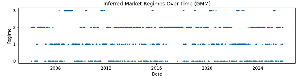
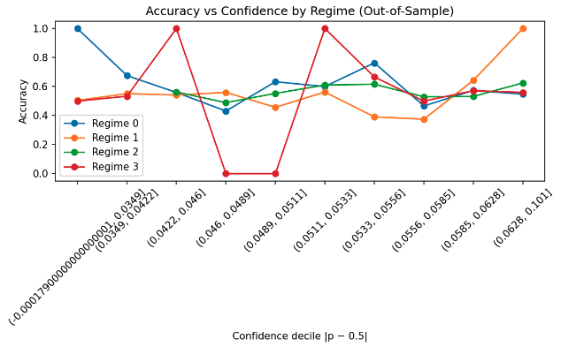
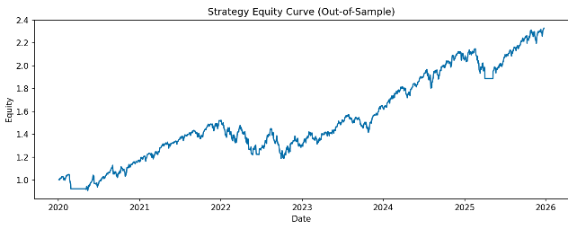
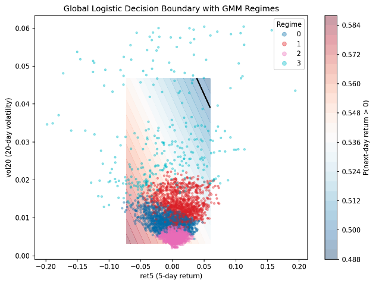
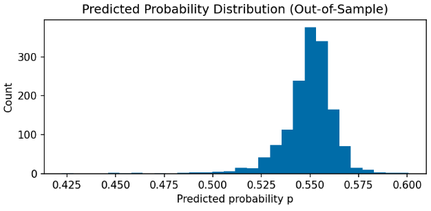

×
A diagnostic study showing that a model's reliability is state-dependent, and that disciplined deployment rules — filtering by confidence and regime — can improve risk outcomes even when daily prediction is weak.
Metrics reported are gross of trading frictions and used primarily for diagnostic comparison, not as live performance claims.
SPY daily closes (2006–2025). Chronological split: 70% train, 30% test.
ret5, vol10, vol20 (standardized on train).
GMM on (ret5, vol10, vol20) fit on train, then applied forward.
Logistic regression predicts next-day direction using (ret5, vol20).
Use |p − 0.5| to stratify reliability and filter trades.
Trade only if |p−0.5| > 0.02 and deactivate execution in the high-risk regime.
OOS accuracy by confidence/regime + strategy Sharpe & max drawdown (gross of costs).
| Regime | Sharpe | Interpretation |
|---|---|---|
| 0 | 1.38 | Strongest contribution in this regime. |
| 1 | 0.41 | Positive but modest. |
| 2 | 0.22 | Low but positive. |
| 3 | NaN | Unstable / adverse high-volatility state. |
Confidence filter: trade only when |p−0.5| > 0.02, and deactivate execution during the high-risk regime.

High-vol regime clusters around prolonged stress episodes, supporting interpretation as persistent market states.

Confidence is not universally monotonic. High-vol regime shows degraded stability (and smaller bin counts).

Selective deployment changes drawdowns/volatility more than it changes raw predictive metrics. Gross of costs.

Regimes occupy distinct areas of (ret5, vol20), providing a geometric explanation for state-dependent behavior.

Predicted probabilities concentrate near the unconditional mean, motivating thresholded deployment.